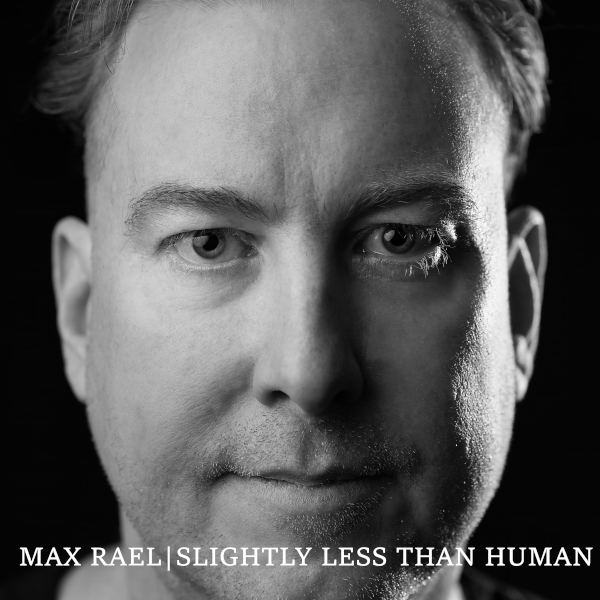

Slightly Less Than Human
Max Rael
- Release Date
- 21 May 2025
- Label
- Liquid Len Recording Company
- Parent Album
- The Enemy Is Us (2025)
- Track ISRCs
- USHM22567552 / USHM22567553
Official Music Video
Directed and filmed by Max Rael without AI, CGI, or post-production filters—capturing all lighting effects live in the room.
About Slightly Less Than Human
The second preview from debut solo album The Enemy Is Us, 'Slightly Less Than Human' pairs a dark, nervy electronic pulse and hooky synth melody with spoken-word vocals. Partly inspired by Japanese author Osamu Dazai, the lyric relays the narrator's sense of standing apart from the rest of the human race and attempting to study and mirror everyday social behaviours in order to pass as an ordinary person.
The exclusive non-album B-side, 'When the Only Winning Move Is Not to Play', takes its title from the 1983 film WarGames and draws on Eric Berne's The Games People Play. Originally slated for the album before being set aside to preserve the LP's narrative flow, the track examines the futility of arguing inside entrenched ideological polarisation.
Tracklist & ISRC Codes
- 01 Slightly Less Than Human ISRC: USHM22567552
- 02 When the Only Winning Move Is Not to Play NON-ALBUM B-SIDE ISRC: USHM22567553
Lyrics
I'm not like you I could never be like you Spent a long time Learning how to pretend It's exhausting Mostly I can pass But deep down I'll always know I'm slightly less than human One of the hardest things Is that I'll never know If the things that happened to me Made me this way Or whether Maybe I was just born Slightly less than human I am slightly less than human
Credits & Attribution
- Written by: Max Rael
- Produced, performed & mixed by: Max Rael
- Additional mixing: Caden Clarkson
- Mastered by: Pete Maher
- Video directed & filmed by: Max Rael
- Released by: Liquid Len Recording Company
- Publicity: Shameless Promotion PR
- Cover artwork & photographs: Filiz Photography (Copyright © 2025 FilizPhotographyUK — must not be altered or sold without photographer's written permission)